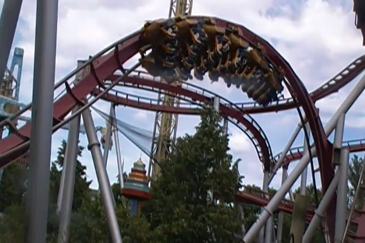
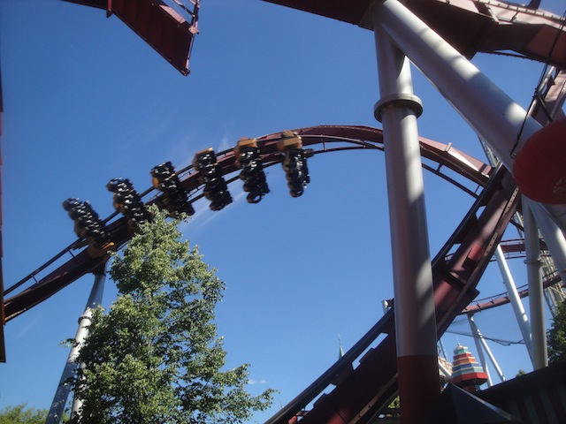
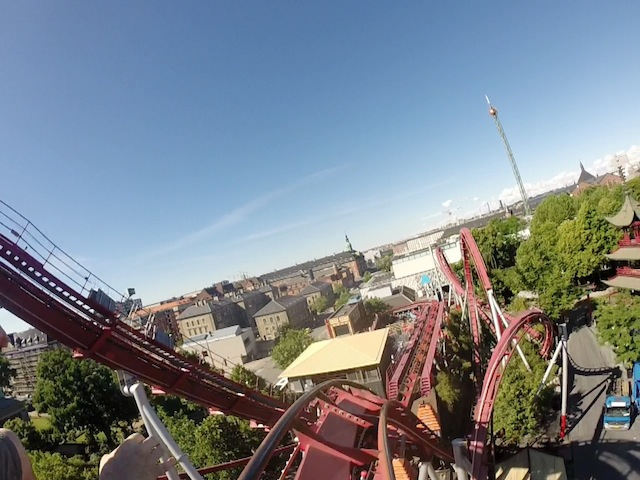
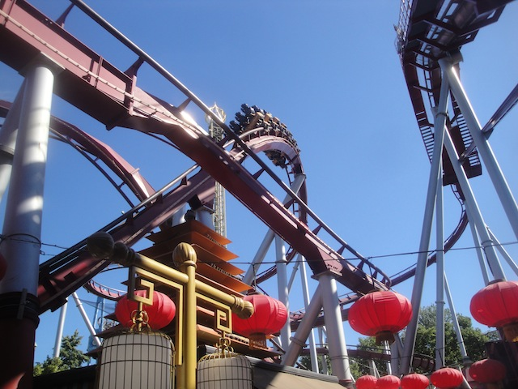

| |
Daemonen Review

We're here at Tivoli Gardens. Today's ride we'll be reviewing for you is Daemonen. The park's B&M Floorless Coaster. Now a park like Tivoli Gardens generally isn't the type of place where you'd expect there to be a B&M Floorless Coaster. But they have one, and it fits in beautifully. Seriously, it doesn't stand out at all. It fits in with the park beautifully. It's definetly one of their smaller coasters, but its still a fun little ride. All right. Let's ride. We get in the cars, pull down the OTSRs, and we're off. We begin to climb the lift hill. It's not that big, but it still looks to be of a decent size. And hey. You get an absolutely beautiful view of the streets of Copenhagen from here. It just looks absolutely gorgeous. But yeah. We're now at the top, we dip off the lifthill, and go around a slight helix. Wee. And yeah. We're now turning and going into another helix above Tivoli Gardens (you get a great view of the park, particuarly of the nearby Space Shot, BTW). OK. Kind of weird. You know what I just realized, this is the Great Bear of Floorless Coasters. Only not quite as random. But seriously. Aside from Daemonen, the only other B&M with a helix like this before the first drop would be Great Bear. It's a little bit awkward, but kind of fun too. At least you have Tivoli Gardens to look at during this helix bit, which is extremely pretty. We then head down the first drop. It's not that big, but thanks to the speed we had from the helix, we're going faster than expected now. Sweet!!! We then head into the vertical loop. Yeah, it looked small and cute from afar, but it's pretty powerful. We just roll right through it fairly quickly. We then head into an Immalmann. Again, it's just so cute, and yet, it packs a decent punch. And hey, we then head straight into a Zero G Roll. And it's fairly strong too. Not the best by far, but a fun little Zero G Roll with some whip. Wait a minute. Pre-Drop Helix, Straight First Drop, Vertical Loop. Immelmann, Zero G Roll? This IS Great Bear. This is exactly what Great Bear does. This is the floorless version of Great Bear! Never thought I'd see a coaster similar to that before. But while Great Bear does a bunch of random sh*t from here, Daemonen is starting to wrap up. We then head into another upward helix. Not bad, it actually has some decent forces. We then head around a small turn that actually has some laterals and into a small hop right into the brake run. So yeah. The best way to describe Daemonen, aside from being just an adorable little B&M Floorless that's so cute and pettable and in one of the best parks ever, is that it's basically the floorless version of the Great Bear highlights. Only instead of meandering around, it just cuts the ride short and ends. So it's also a very quick B&M. But it's just a really fun little ride that fits in beautifully with the park. Definetly give it a ride when visiting Tivoli Gardens.
7/10
Location: Tivoli Gardens
Opened: 2004
Built by: B&M
Last Ridden: June 15, 2014
Daemonen Photos








Home
|